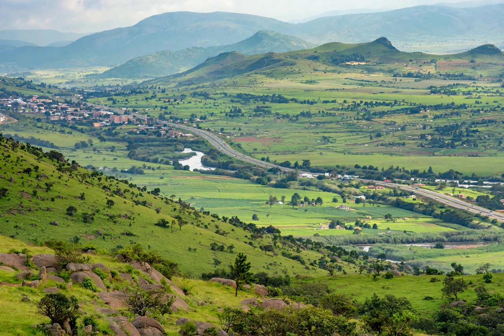

Eswatini, officially the Kingdom of Eswatini and formerly known as Swaziland, is a landlocked country in Southern Africa, bordered by Mozambique to the east and South Africa on its other sides. It is one of the smallest countries in Africa, with an area of about 17,364 km² and a population of roughly 1.2 million. Its capital and largest city is Mbabane; the legislative capital is Lobamba.
The Swazi people settled the region under leaders including Mswati II in the nineteenth century. The country became a British protectorate after the Boer Wars and gained independence on 6 September 1968. King Sobhuza II ruled for over sixty years in total, suspending the constitution in 1973. His son, Mswati III, has reigned since 1986. In April 2018 the king announced the country's name change from Swaziland to Eswatini ("land of the Swazis").
Eswatini is often described as one of the world's last absolute monarchies: the king appoints the prime minister and holds extensive powers, and political parties are effectively excluded from the electoral process, in which candidates stand as individuals under the tinkhundla system. Pro-democracy protests in 2021 were met with a security crackdown and continuing debate about reform.
The economy depends on agriculture (especially sugar), manufacturing, remittances and the Southern African Customs Union, and is closely tied to South Africa; the currency, the lilangeni, is pegged to the rand. Eswatini has faced one of the world's highest HIV prevalence rates, though treatment coverage and life expectancy have improved markedly in recent years. Major cultural events include the Umhlanga (Reed Dance) and Incwala ceremonies.